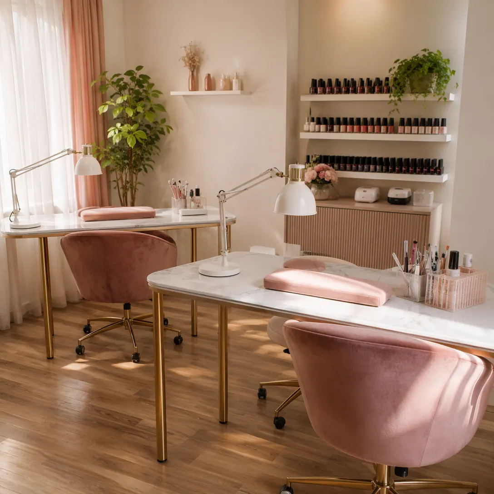
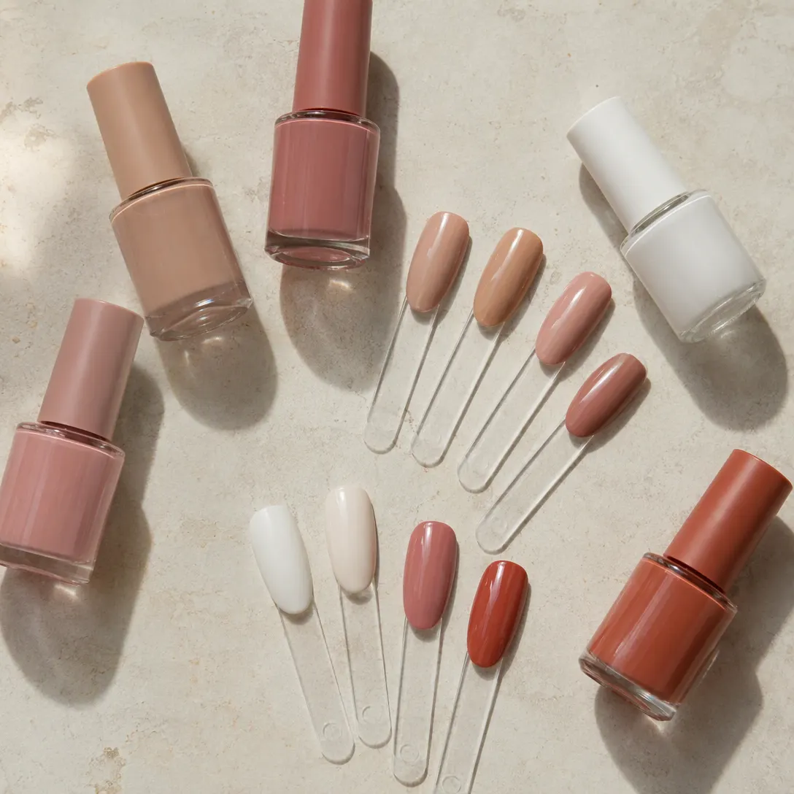
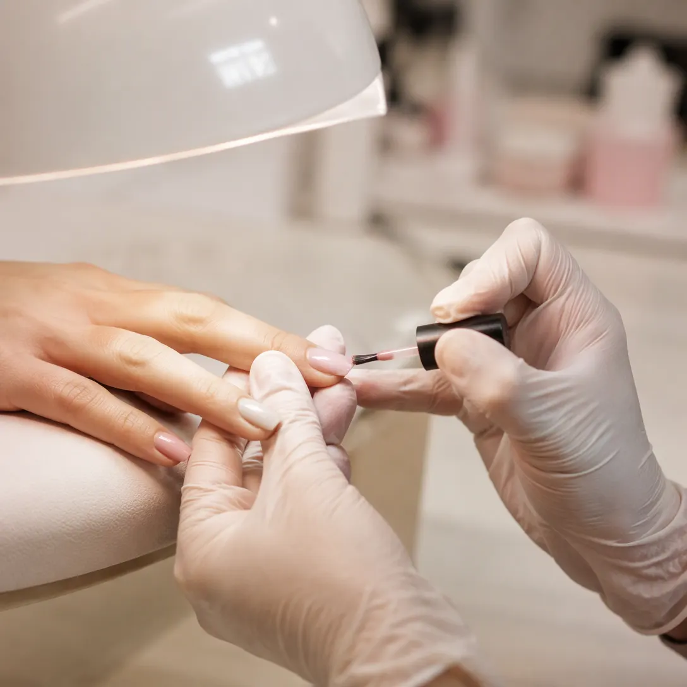

Студия маникюра в Тюмени · Советская, 112
Маникюр, который держится
Выберите услугу, день и время – запись уйдёт мастеру сообщением в один клик.
- 5,0 на Яндекс Картах – 99 оценок
- Гости хвалят стойкость маникюра
- Советская улица, 112
Что хвалят гости
По данным Яндекс Карт
- Маникюр – 100 % положительных отзывов
- Атмосфера – 100 % положительных
- Время ожидания – 96 % положительных
Из отзывов
- «Самый прочный маникюр, который у меня был»
- «В салоне чисто, уютно»
- «Все мастера молодцы, знают свою работу»
Как проходит запись
- 01
Выбираете время
Услугу, день и час прямо на сайте – без звонков и ожидания ответа.
- 02
Пишете нам
Запись уходит во ВКонтакте студии готовым текстом.
- 03
Ответ мастера
Если время занято, предложим ближайшее свободное.
- 04
Приходите
Советская улица, 112. Время подтвердит мастер в ответном сообщении.



Почему к нам возвращаются
Стойкий результат
Гости пишут, что это «самый прочный маникюр» – и возвращаются за новым.
Чисто и уютно
Порядок в салоне гости отмечают в отзывах отдельно.
Мастера знают работу
«Все мастера молодцы, знают свою работу» – из отзывов на Картах.
Запись без звонков
Выбираете время на сайте – мастер подтверждает сообщением.
Отзывы с Яндекс.Карт
«Отличное качество маникюра - это самый прочный маникюр который у меня был!»
Анастасия Пономарева · 22 июля
«В салоне чисто уютно, все мастера молодцы знают свою работу.»
Валентина Клабукова · 22 сентября 2025
Отзывы с карточки на Яндекс.Картах, без правок.
Частые вопросы
Сколько стоит маникюр?
Цена зависит от покрытия и дизайна – мастер называет её при записи, до визита.
Как записаться?
Выберите услугу, день и время в форме выше – запись уйдёт мастеру во ВКонтакте. Или позвоните: +7 (904) 462-31-64.
Где вы находитесь?
Тюмень, Советская улица, 112.
Сколько держится маникюр?
Гости пишут, что это «самый прочный маникюр». Срок зависит от покрытия и ухода – мастер подскажет при записи.
Выберите день и время
- Адрес
- Советская улица, 112, Тюмень
- Часы
- уточняйте при записи
- Телефон
- +7 (904) 462-31-64